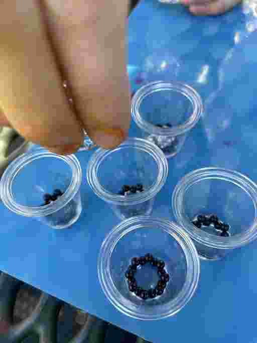

First we brainstormed our product and found one that best fit us. Next, we searched for products, found our Cost of Goods Sold (COGS) and bought some materials. Maya made some prototypes and we agreed that we should make not just keychains, but also resin necklaces.
The first step to making our boba keychain product is to is to mix water, glycerin, glue, and dye in a cup.
Next, we add decrotive black beads and elegant fake ice cubes into the miniture boba cups
Then, we pour the liquid mixture into the embellished mini boba cups.
After that we dab a small amount of our deluxe resin on the adorable straw and rim and put it under UV light to dry
Before long it is dry so we add one of our state of the art keychains to the boba and add our logo to the cup.
First, we put gold, silver, and bronze metal frames on silicone and pour resin into them halfway. We use a lighter to pop the bubbles on the surface of the resin.
Next, we carefully place delicate pressed flowers and/or gold flakes onto the resin using handy tweezers, and run it under UV Light for 2-3 minutes.
Then, we pour more resin on top of the flower so it fills the mold, making sure to push the resin to all of the edges. We then run it under the UV Light again for 2-3 minutes.
Lastly, we peel it off the silicone and add one of our high-quality gold necklace chains or black thread.
First, we mix resin with sand and two shades of blue mica powder.
Next, we place rectangle metal frames on silicone and pour the sand mixture into around 1/3 of the frame. We add the silver turtle and dry it with UV Light.
Then, we pour the light and dark blue mica powder mixtures into the rest of the frame. We use a lighter to get rid of bubbles and a toothpick to swirl the colors together before placing it under the UV Light again.
Before long, we pour clear resin on the top to give it a shiner look and cover more of the turtle.
Finally, we carefully remove the necklace from the silicone and attach the black cord to the end.